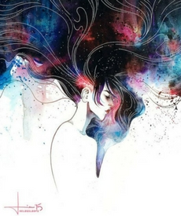
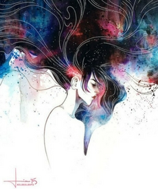

Qinni
Qinni is a devian artist, and a youtuber. In the past few years, she gained a lot of followers in instagram,youtube and facebook respectively, 1 million followers, 240 000 subscribers and 450 000 facebook followers.
Her paintings can be describe as a unique one, it shows mystery and beauty of the galactic skies.


Her artworks costs from $ 45 up to $ 250. These artworks are very detailed and contains a very galactic shade of colors.
Show Artworks
Tillith
Tillith is a german painter with artworks expressing the deepness and darkness of emotions.The artworks awakes your emotions in every sense, with shades of blue, these artworks sway you.
These artworks gathered a hundred thousand subscribers and a large amount of followers in its facebook page.


Her artworks costs from $ 25 up to $ 150. These artworks are unique and very sensitive to emotions.
Show Artworks
Kelogsloops
Known as Kelogsloops, Hieu is a 19-year old old Melborne artist who had a passion in arts.His watercolor paintings are best known for its texture, palette and its composition.
Everybody will surely be amazed by his skills, which gathered him a lot of success.
 


Her artworks costs from $ 55 up to $ 275. These artworks are unique and very sensitive to emotions.
Show Artworks
If you want to know more, follow these following pages
QinniTillith
Kelogsloops